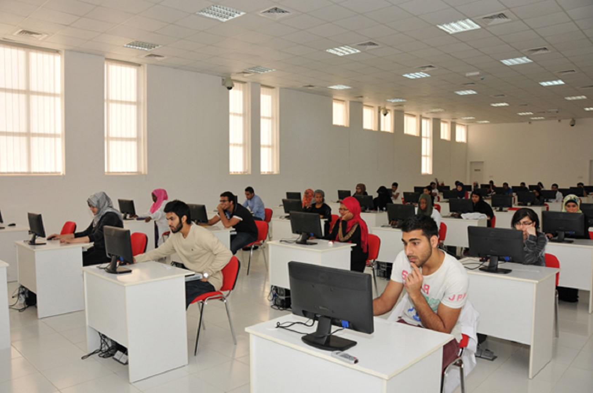

Mata Leelawati Shikshan Sansthan, a registered education society setup The “Institute of Information Technology and Management” in 1999. It is engaged in various philanthropic activities, with Shri T. N. Chaturvedi, a Padma Vibhushan awardee, as the founder President of both, the society and the institute. The Institute is affiliated to Guru Gobind Singh Indraprastha (GGSIP) University, Delhi for Master of Computer Application (MCA), Master of Business Management (MBA), Bachelor of Business Administration (BBA) and Bachelor of Computer Application (BCA) programmes and is also approved by All India Council for Technical Education (AICTE), Read More